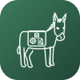

Invoices and packing slips that hold their shape.
Template-driven documents, numbered under a lock, printed a hundred at a time.

Issuing freezes the line items, addresses, adjustments, totals and payments onto the document. An invoice that quietly restates itself every time it is reprinted is not an invoice, it is a report.
Each one a document type you configure: its own numbering, template, trigger and design.
One place hands out a number, under a mutex, with a unique index behind it.
Select the orders, pick a document, get one PDF back — with continuous page numbers.
A rule fires when the email is actually sent — the only moment the customer sees.
Every document is a Twig template. Copy the bundled folder, point the type at your copy, own it outright.
Backfill a year of orders with a dry run first, oldest order first, each document dated when the order happened.